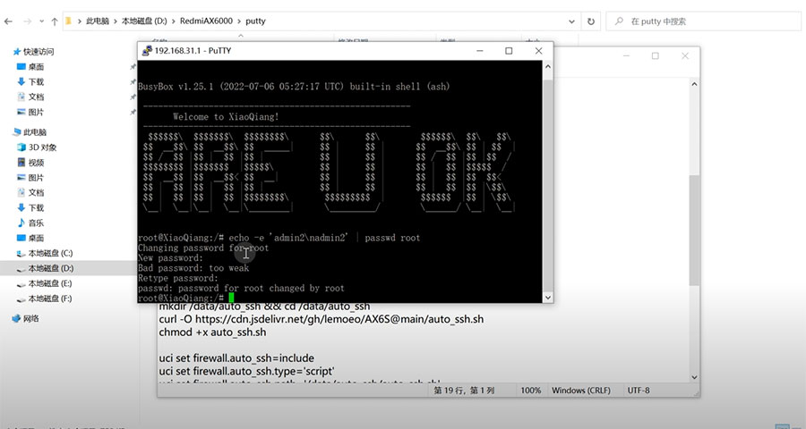

红米路由器AX6000解锁SSH，操作非常简单。
工具下载：https://github.com/kjfx/AX6000/releases/tag/redmi_ax6000_ssh
步骤：
一、登录路由器后台
二、开启TELNET：
1.开启开发/调试模式
http://192.168.31.1/cgi-bin/luci/;stok=XXXXXX/api/misystem/set_sys_time?timezone=%20%27%20%3B%20zz%3D%24%28dd%20if%3D%2Fdev%2Fzero%20bs%3D1%20count%3D2%202%3E%2Fdev%2Fnull%29%20%3B%20printf%20%27%A5%5A%25c%25c%27%20%24zz%20%24zz%20%7C%20mtd%20write%20-%20crash%20%3B%20
2.重启
http://192.168.31.1/cgi-bin/luci/;stok=XXXXXX/api/misystem/set_sys_time?timezone=%20%27%20%3b%20reboot%20%3b%20
3.设置Bdata永久开启telnet
http://192.168.31.1/cgi-bin/luci/;stok=XXXXXX/api/misystem/set_sys_time?timezone=%20%27%20%3B%20bdata%20set%20telnet_en%3D1%20%3B%20bdata%20set%20ssh_en%3D1%20%3B%20bdata%20set%20uart_en%3D1%20%3B%20bdata%20commit%20%3B%20
4.重启
http://192.168.31.1/cgi-bin/luci/;stok=XXXXXX/api/misystem/set_sys_time?timezone=%20%27%20%3b%20reboot%20%3b%20
三、开启SSH：
连上telnet后运行下列命令：
1.修改root密码为admin
echo -e 'admin\nadmin' | passwd root
2.固化SSH
nvram set ssh_en=1
nvram set telnet_en=1
nvram set uart_en=1
nvram set boot_wait=on
nvram commit
3.永久开启SSH（重启不会关闭）：
mkdir /data/auto_ssh && cd /data/auto_ssh
curl -O https://fastly.jsdelivr.net/gh/lemoeo/AX6S@main/auto_ssh.sh
chmod +x auto_ssh.sh
uci set firewall.auto_ssh=include
uci set firewall.auto_ssh.type='script'
uci set firewall.auto_ssh.path='/data/auto_ssh/auto_ssh.sh'
uci set firewall.auto_ssh.enabled='1'
uci commit firewall
4.修改时区设置
uci set system.@system[0].timezone='CST-8'
uci set system.@system[0].webtimezone='CST-8'
uci set system.@system[0].timezoneindex='2.84'
uci commit
5.关闭开发/调试模式
mtd erase crash
6.重启
reboot
